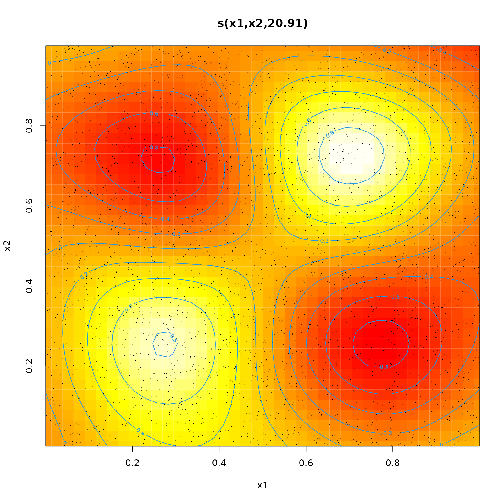
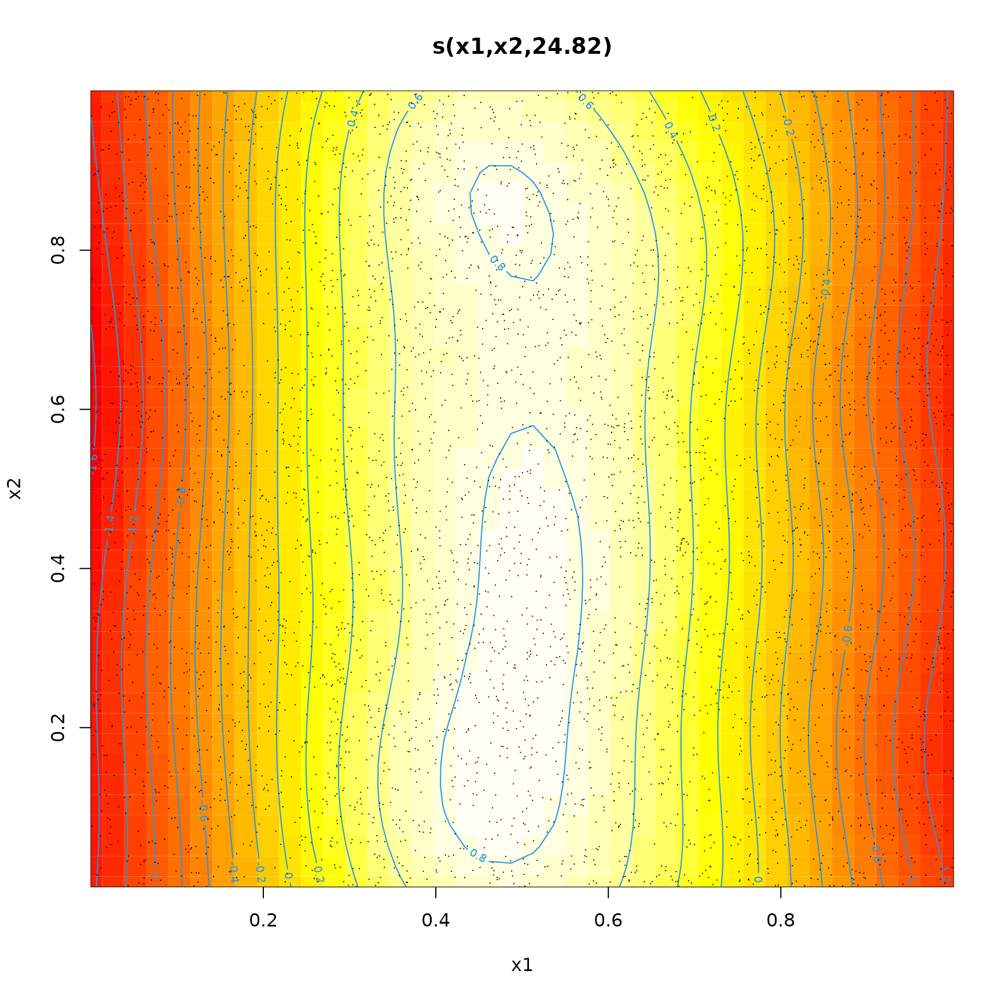
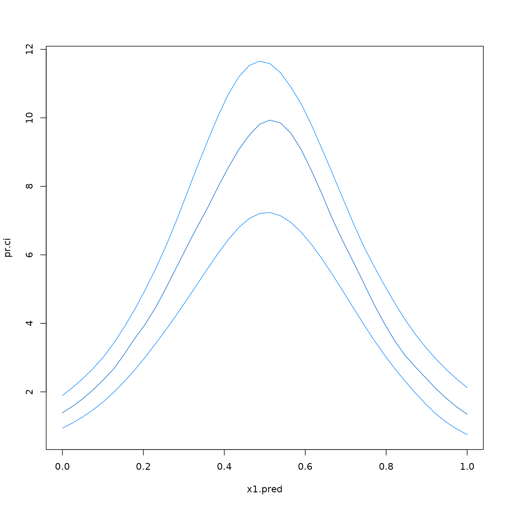

vignettes/zigam.Rmd
zigam.RmdThe mgcv package (Wood (2006)) implements zero-inflated Poisson Generalised Additive Models (GAMs) with smoothing parameter estimation by either restricted maximum likelihood (REML) or maximum likelihood (ML). However, it does not permit for the inclusion of an offset term in the model.
The zigam package implements zero-inflated GAMs using the EM Algorithm (Pawitan (2001)) which permits the inclusion of an offset. The predictions should be reliable, but standard errors (and possibly the level of smoothing chosen) will be unreaslistic. Confidence intervals are therefore estimated using a parametric bootstrap (Efron and Tibshirani (1993)).
Note this example does use a model that includes an offset.
Set a seed for repeatability
set.seed(12032016)Simulate some data to test
n <- 5000
x1 <- runif(n)
x2 <- runif(n)
ilogit <- function(x) 1/(1+exp(-x))
p <- ilogit(sin(2*pi*x1)*sin(2*pi*x2))
lambda <- exp(10*x1*(1-x1))
z <- rbinom(n,1,p)
y <- rpois(n,lambda*z)
d <- data.frame(x1=x1,x2=x2,y=y)Load the mgcv and zigam packages.
library(mgcv)## Loading required package: nlme## This is mgcv 1.8-42. For overview type 'help("mgcv-package")'.Fit a zero-inflated Poisson model.
Show the inflation model (actually the model for this being a Poisson count)
plot(fit$fit.pi,select=1,scheme=2)
and the model for the mean of the Poisson counts (with the additional zeroes removed)
plot(fit$fit.lambda,select=1,scheme=2)
A difficulty with the EM algorithm is that the estimated standard errors from the two stages of the fit tend to be underestimated, because each fails to recognize the variability in the other.
One approach to estimating variability is the parametric bootstrap - we fit the model to the data, simulate new data from the model and then refit the model to the new data.
Simulate a small data set (for speed)
n <- 200
x1 <- runif(n)
x2 <- runif(n)
ilogit <- function(x) 1/(1+exp(-x))
p <- ilogit(1+sin(2*pi*x2))
lambda <- exp(10*x1*(1-x1))
z <- rbinom(n,1,p)
y <- rpois(n,lambda*z)
d <- data.frame(x1=x1,x2=x2,y=y)Fit a simple model
If the data we wish to predict for is
x1.pred <- seq(0,1,length.out=40)
d.pred <- data.frame(x1=x1.pred,x2=rep(0,40))Then the parametric bootstrap for the predicted responses is
d.boot <- d
boot <- sapply(simulate(fit,20),function(s) {
## Update response
d.boot[,"y"] <- s
## Refit model and generate predictions
fit.boot <- update(fit,data=d.boot)
predict(fit.boot,d.pred,type="response")
})Extract the quantiles and plot
pr.ci <- t(apply(boot,1,quantile,prob=c(0.025,0.5,0.975)))
matplot(x1.pred,pr.ci,type="l",lty=1,
col=c("dodgerblue1","dodgerblue3","dodgerblue1"))